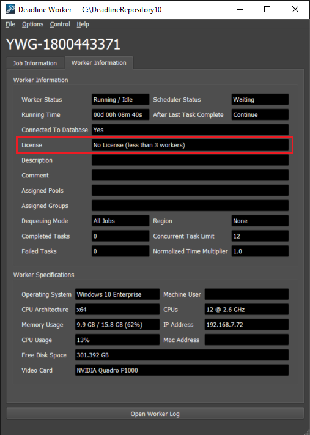
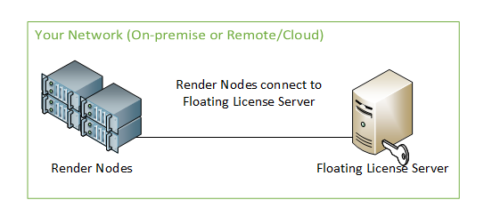
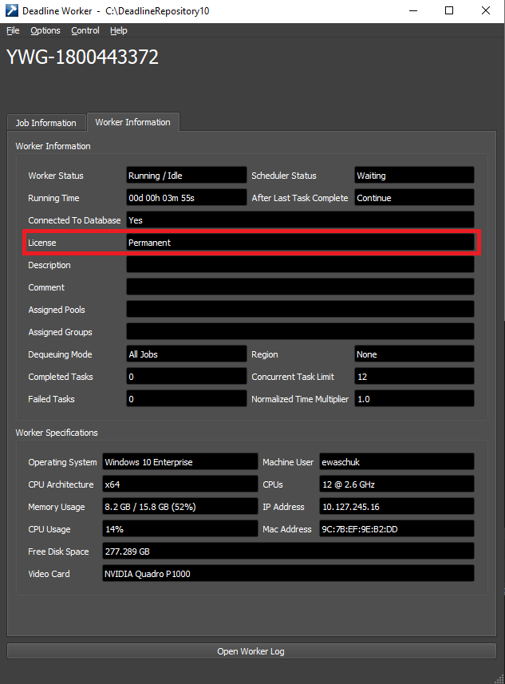
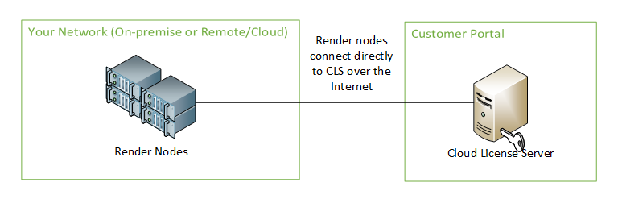
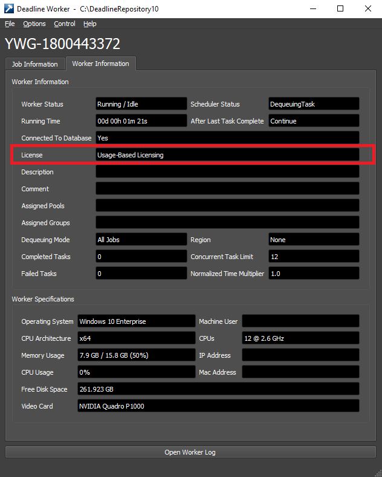
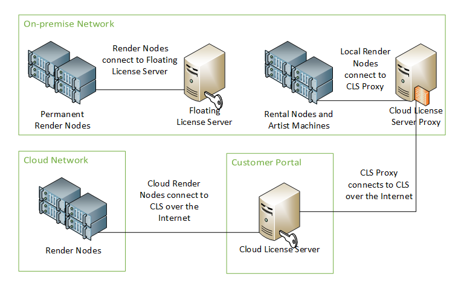

Deadline Licensing¶
Note
Starting with Deadline 10.1.23, Deadline and its components do not require a license. This section is left for operators of older versions of Deadline. Please see the Thinkbox Floating License Portal documentation if you require Deadline licenses.
Overview¶
While Deadline ships with many different applications and features, only the following require a license:
Worker: This application is responsible for processing render jobs.
Draft/Quick Draft and Jigsaw: Draft and Quick Draft can be used to perform compositing operations or create movies from rendered images, and Jigsaw is a flexible multi-region rendering system for Deadline.
Tools like the Monitor and submission interfaces do not require a license, which means that you can submit and monitor your render jobs from as many machines as you like without additional licenses.
Please see our Licensing FAQs for more information, or Thinkbox Floating License Portal if you have any questions regarding Deadline licensing.
License Versions and Upgrading¶
Deadline licensing only takes into account the first two parts of the version number. For MAJOR version and MINOR version upgrades, a new license will be required. A new license is NOT required however for new PATCH versions. For example upgrading from Deadline 9.X.Y.Z to Deadline 10.A.B.C WOULD require a new license. Upgrading from Deadline 10.0.X.Y to Deadline 10.1.A.B WOULD also require a new license. Upgrading from Deadline 10.0.26.X to Deadline 10.0.27.Y WOULD NOT require a new license.
Worker Licensing¶
Starting with Deadline 10.1, there are now three licensing models that are supported for the Deadline Worker:
No License¶
Free on AWS¶
As of Deadline 10.1, your Workers are no longer required to have a license when running on an AWS EC2 instance. It does not matter which licensing mode you previously had selected for the Worker, when it starts up on an EC2 instance it will automatically switch itself to the Free Deadline Licensing on AWS mode.
This is only for versions 10.1 and above. Older versions of Deadline will still require a valid license to render.
License-Free Mode¶
License-Free Mode allows you to run up to ten Deadline Workers without requiring a license. This is useful if you want to test Deadline on a couple of machines before deploying to your entire farm, or if you simply have a few extra machines that you would like to utilize for rendering. In other words, ten Deadline render nodes are completely free of charge!
In order for License-Free Mode to work, only ten Deadline Worker instances can exist in your farm. These Worker instances can be on separate machines, or on the same machine. If an eleventh Worker is added to the farm, you will then need a valid license for each Worker intance, including the first ten that were originally free. If you accidentally add an eleventh Worker instance, you will need to delete one from the Deadline Monitor before License-Free Mode can work again (even if one or more of the Worker instances are offline).
The licensing information is displayed in the Worker Panel in the Monitor and appears in the Worker UI like this:
Note that Draft, Quick Draft, and Jigsaw, are NOT available in License-Free Mode. Please see our Licensing FAQs for more information.
Further note that if Deadline is configured to use Floating Licensing or Usage-Based Licensing, it will only use License-Free Mode if those other licensing methods fail.
Floating Licensing¶
The floating license model involves acquiring permanent or temporary licenses from the Thinkbox Floating License Portal, and running the floating license server on your network. One floating license is required per render node. So, if you have 50 render nodes, you will require 50 floating licenses.
In addition, if you are running multiple Workers on the same Operating System (OS), they will share the same Deadline license. For example, if you have 10 render nodes, and half are running 1 Worker and half are running 2 Workers, you still only need 10 Deadline licenses.
However, if you create a Virtual Machine (VM) on a render node, and run one or more Workers on the host OS, and one or more Workers on the VM OS, two Deadline licenses will be required for that render node - one for each OS instance running on it. If you do this for all 10 render nodes in the above example, 20 Deadline licenses would be required.
This licensing model is still the recommended option for render nodes that are active the majority of the time. For example, it is more cost-effective to purchase permanent floating licenses for dedicated render nodes on a local render farm that are typically rendering more often than not.
Once you have your floating Deadline licenses, see the License Server Documentation for more information on installing and configuring the License Server. Please note the minimum system requirements for your License Server and your Flexlm license server MUST be at least version 11.12 or later. The latest Thinkbox Flexlm License Server can be downloaded from our website.
When the License Server is up and running, the next step is to configure the Workers to communicate with it. There are a handful of ways to set the License Server for the Workers:
During the Client Installation: When installing the Deadline Client applications, select “Floating Licensing” when you are prompted to choose a License Mode. You will then be prompted to enter a License Server in the following screen.
Using the Launcher: If you have already installed the Deadline Client applications, start the Launcher (if it is not already running). Right-click the
 icon in your system tray or notification area, and select the Change License Server option in the Launcher menu.
icon in your system tray or notification area, and select the Change License Server option in the Launcher menu.In the Client Configuration file: You may manually set the License Server in the Client Configuration file by changing the LicenseServer setting. It is also possible to configure this setting using Auto Configuration to deploy it to each Worker in your farm.
In each case, the License Server entry should be in the format @SERVER, where SERVER is the host name or IP address of the machine that the license server is running on. If you configured your license server to use a specific port, you can use the format PORT@SERVER. For example, @lic-server or 27008@lic-server.
The licensing information is displayed in the Worker Panel in the Monitor and appears in the Worker UI like this:
After setting up your license server, if you are still seeing the Worker appear as being in License-Free Mode, please view the Worker Logs for a detailed error message.
The Worker will check for a license periodically, whenever it is ready to dequeue a task. If the License Server goes offline, or a Worker loses its connection to it while it is rendering a task for a job, it will be allowed to finish rendering the task before it checks for a license again. It will not be able to pick up new tasks until it is successfully checks out a license again, but the job it was rendering will not be canceled.
Note that there is a 15 minute grace period between when a Worker loses its connection, and when it is considered to be offline. That is, if it has been at least 15 minutes since a Worker last connected to the License Server, the License Server will free up the license that the Worker was using. Likewise, if the Worker goes 15 minutes without being able to connect to the License Server, it will go into unlicensed mode.
Usage-Based Licensing¶
Warning
Topics covered in this page refer to legacy Thinkbox usage-based licensing (UBL), which is no longer available as of September 30, 2025. The UBL feature in Deadline 10 is now available through AWS Deadline Cloud UBL. For detailed setup instructions, please see the Deadline Cloud UBL Documentation.
For more details, please refer to the marketplace website.
The Legacy Thinkbox Usage-Based Licensing model allows you to pre-pay for on-demand render time by the hour by visiting the Thinkbox Marketplace. After purchasing render time, the render nodes will consume this render time on a per-minute basis, and they will ONLY do so while they are rendering jobs (they will not consume this render time when they are idle or offline). So, if you purchased 24 hours of render time, you could render with 1 render node for a day, 2 render nodes for half a day, 12 render nodes for 2 hours, etc.
Not only is Usage-Based Licensing available to license Deadline, is can also be used to license select 3rd party products when using Deadline to render them. See the 3rd Party Usage-Based Licensing documentation for more information.
Note that unlike Floating Licenses, Usage-Based Licensing for Deadline and 3rd party products is consumed on a per-Worker basis. For example if you have 2 Workers on the same machine each render a task over a 5 minute period, you will consume 10 minutes of Deadline render time.
This licensing model is recommended for render nodes that are utilized on a temporary basis. For example:
Cloud-based render nodes. If you use them to expand your on-premises render farm, you’ll only use Usage-Based Licensing for the time they spend rendering, just like you’ll only pay your cloud provider for the time that your instances are running.
On-premises rental machines. If you bring in 50 physical machines for 3 days, it could be more cost effective for them to use Usage-Based Licensing, rather than rent floating licenses for the week.
Artist workstations. If artists add their machines to the farm periodically, it could be more cost effective for them to use Usage-Based Licensing, rather than purchasing permanent licenses for them.
The licensing information is displayed in the Worker Panel in the Monitor and appears in the Worker UI like this:
After setting up usage-based licensing, if you are still seeing the Worker appear as being in License-Free Mode, view the Worker Logs for a detailed error message.
As mentioned above, it’s often beneficial to combine Usage-Based Licensing with the existing Floating licenses you already have in place. Note that there are three different ways to consume Usage-Based Licensing, which are described below. See the Usage-Based Licensing Documentation for more information.
Hybrid Licensing¶
Note that Floating Licensing and Usage-Based Licensing are not exclusive of each other, which means that they can be used separately or together, across local, remote, or cloud-based render nodes. Here is an example of how floating and usage-based licensing models can be used together in a hybrid farm.
Draft/Quick Draft and Jigsaw Licensing¶
Draft and Quick Draft are both licensed by the same, additional FlexLM FEATURE draft in your Thinkbox license file. Jigsaw also requires a Draft license in order to assemble the final image after all regions have finished rendering. While this extra license is required, it is free for users with an active Deadline annual support and maintenance contract. When updating your Deadline license file, please ensure that you also update your version of Draft where applicable.
A Draft license is only checked out when it is used to encode or decode videos. All other Draft features, including Jigsaw assembly, simply requires the license FEATURE to exist. A Draft Pro license (FEATURE draft-pro-codec) is ONLY required if you are encoding to the 3rd party Avid DNxHD codec.
Note that Draft, Quick Draft, and Jigsaw assembly is NOT available when running in License-Free Mode, or if your Deadline annual support contract has expired. In addition, they are currently NOT available with Usage Based Licensing.

{kind=link}
{kind=link}
{kind=link}